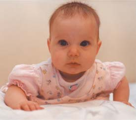

Зоны особого внимания |
| Малый таз. |
Именно эта часть тела меняется особенно заметно: здесь расположена матка, внутри которой растет малыш. Позднее, когда начнутся роды, кости малого таза должны будут расступиться, чтобы пропустить ребенка, а затем сомкнуться вновь. Речь идет о четырех костях, прочно соединенных друг с другом хрящами. Под действием женских гормонов хрящи размягчаются и становятся более эластичными. |
| Матка |
- «мышечный карман», в котором растет малыш, - находится внутри малого таза и, но форме напоминает грушу. В начале беременности матка весит 50-70 г, а ближе к родам - окало 1 кг. |
| Тазовое дно |
- группа мышц, которые поддерживают органы малого таза. Во время беременности тазовое дно растягивается, ведь сверху на него давит матка с находящимся в ней ребенком. |
| Позвоночник |
держит вес нашего тела, и это значит, что во время беременности он испытывает двойную нагрузку. Малыш растет, и в малом тазе становится тесновато, поэтому позвоночник отклоняется немного назад, благодаря этому будущим мамам удается сохранять устойчивость. |
| Мышцы живота |
во время беременности растягиваются. Например, женщина с талией 66 см может «расшириться» до 100 см. |
| Молочные железы |
потихоньку увеличиваются в течение всех 9 месяцев беременности. Это объясняется тем, что грудь состоит, в том числе и из ткани, которая «отвечает» за выработку молока. После того как молодая мама прекратит кормить малыша, грудь может изменить форму, и не в лучшую сторону. Это происходит из-за того, что железистая ткань возвращается к своим прежним размерам. Чтобы избежать разочарований, нужно носить бюстгальтер, хорошо поддерживающий грудь, пользоваться специальными кремами и делать упражнения на укрепление мышц. Не менее важна и правильная осанка. Если вы сидите, стоите или ходите, сутулясь, грудь кажется «висящей». Держите спину прямо, опустите и расслабьте плечи. |
| Спина, ягодицы, ноги. |
В среднем будущие мамы поправляются на 12,5 кг. По крайней мере, 4,5 из них располагаются» на бедрах, руках, спине и животе. |

А что же малыш?
В последнее время в медицинской литературе все чаще появляются сведения о развитии органов и систем еще не родившегося ребенка. Получают эти данные с помощью ультразвукового сканирования, кардио - токографии (исследование биотоков малыша), кино- и фотосъемки внутри матки. Одним из первых открытий, сделанных с помощью УЗИ, стали регулярные ритмичные «дыхательные» движении грудной клетки ребенка. Затем было отменено, что малыш может глотать и икать, а его мочевой пузырь способен наполняться и опорожняться. Дальнейшее изучение показало, что еще не родившийся ребенок видит, может чувствовать запах и вкус, ориентируется в пространстве.
Специалисты, изучающие жизнь ребенка, а мамином животе (эмбриологи, нейрогистологи, невролога), детально описали процесс развития нервной системы и головного мозга. Стало известно, что к 28-й неделе беременности структура мозга соответствует той, что обнаруживается на 40-й неделе развития, то есть е то время, когда малыш уже готов родиться.
Что происходит внутри? |
| 1-й день |
Сперматозоид соединяется с яйцеклеткой. В результате образуется одна «большая» (размером меньше, чем крупинка соли) клетка, которая содержит 46 хромосом, унаследованных, унаследованных от родителей (по 23 хромосомы от каждого). Кроме того, оплодотворенная яйцеклетка включает в себя весь генетический набор будущего человека: рост, пол, цвет глаз и кожи, волосы, черты лица (папины или мамины). |
| 3-9-й день |
Оплодотворенное яйцо опускается по маточной трубе в матку. Разросшаяся слизистая оболочка матки уже готова принять зародыш, который прикрепляется к ее стенке и вскоре начинает получать «пищу» для питания и кислород для дыхания с кровью мамы, поступающей к нему через пуповину и ветвистый хорион (будущую плаценту). |
| 10-14-й день |
Зародыш становится больше на одну десятую своего прежнего размера! |
| 20-й день |
Происходит процесс закладки нервной системы |
| 21-й день |
Начинает биться сердце. |
| 28-й день |
Формируются позвоночник и мышцы. На экране монитора видны руки, ноги, глаза, уши. |
| 30-й день |
За прошедший месяц эмбрион вырос в десять тысяч раз и продолжает активно развиваться. Сердце прокачивает через кровеносную систему все увеличивающееся количество крови. |
| 35-й день |
На ручке малыша можно различить пальчики. Цвет глаз темнеет, поскольку организм ребенка уже начал производить пигмент. |
| 40-й день |
Специальный прибор обнаруживает сигналы, поступающие от мозга. |
| 6 недель |
Печень берет на себя производство кровяных клеток, а мозг контролирует движения мышц и работу сердца. |
| 7 недель |
Веки наплывают на глаза ребенка и постепенно закрывают их, защищая, таким образом, развивающуюся структуру глаза от света и сухости (с 28-й недели по желанию малыша глаза могут начать открываться). На этом же сроке беременности формируется внутреннее ухо, оформляются челюсти, появляются зачатки зубов. Но самое главное – малыш начинает шевелиться! А так как он еще слишком мал, мама не чувствует его движений. |
| 8 недель |
Малыш подрос до 2,5 см! Он уже совсем похож на взрослого человека. Сердце бьется, желудок вырабатывает желудочный сок, начинают функционировать почки. Мышцы сокращаются под воздействием импульсов, поступающих от мозга. По крови ребенка можно определить его Rh-принадлежность. Сформировались пальцы и суставы. Лицо малыша приобретает собственные черты, мимика начинает отражать то, что происходит в окружающей среде. Тело ребенка реагирует на прикосновение. |
| 10 недель |
Рост ребенка достигает 4 см, вес - приблизительно 2 г. В этот период у малыша начинают формироваться наружные и внутренние половые органы. |
| 12 недель |
Малыш растет. Время от времени его можно застать за необычным занятием-сосанием пальчика! В период бодрствования (который чаще всего сменяется отдыхом, сном) малыш энергично «упражняет» свои мышцы: поворачивает голову, загибает пальцы на руках и ногах, открывает и закрывает рот. Если внешний мир начинает беспокоить резкими звуками, ребенок пытается закрыть руками уши (он слышит!) и старается загородиться ладошкой от луча света, направленного в глаза (он видит!). Если дотронуться до его ладошки, она сожмется в кулачок. Все эти движения осуществляются благодаря тому, что у малыша сформировался вестибулярный аппарат, который помогает ему ориентироваться. |
| 16 недель |
Ребенок весит примерно 150г., его рост достигает 16-18 см. На головке появляются волосы, на лице - реснички и брови. Малыш открывает ротик, глотает, сосет, улыбается! В этот период начинает полноценно функционировать плацента, которая связывает его с мамой. |
| 20 недель |
Рост малыша достигает 30 см, у него появляются ноготки на пальцах рук и ног. Теперь мама хорошо чувствует его шевеления, так как время от времени он начинает заниматься «физкультурой»: отталкивается от одной стенки матки и доплывает до другой. Кроме того, ребенок может отреагировать на резкий наружный звук или волнение матери прыжком, который мама принимает за активное шевеление. Если же малыш начнет икать, женщина ощутит слабые ритмичные толчки, идущие изнутри. В 20 недель врачи уже выслушивают сердцебиение малыша с помощью специальной слушательной трубки. |
| 24 недель |
Малыш может рассердиться! Это доказывает фотографированный сердитые взгляд, напряжение мышц вокруг глаз, сморщивание губ и плач – так ребенок выражает свое недовольство. Кстати, чтобы отдохнуть ночью, малыш «ложится» спать и … видит сны!
В этом возрасте ребенок весит 500г. – совсем немного, но ведь он только начал набирать вес! Его кожа, красная и морщинистая, похожа на кожу старичка. Чтобы защитить ее от действия околоплодных вод, выделяется специальная смазка.
К 24-й неделе беременности начинают функционировать жировые и потовые железы, созревают легкие ребенка и образуется пленка, которая не дает им склеиваться во время дыхания. Если ребенок родится на этом сроке и его окружат необходимой заботой, он сможет выжить.
|
| 28 недель |
Ребенок весит около 1000 г., его рост достигает 35см. Теперь он пользуется всем набором чувств: зрением, слухом, вкусом, осязанием (эти данные подтверждаются исследованием биотоков мозга (ЭЭГ) еще не родившегося ребенка). В этом возрасте ребенок начинает узнавать голос мамы. Малыш осуществляет первые элементарные дыхательные движения. Его кожа уплотняется (утолщается) и становится больше похожа на кожу новорожденного. Если на этом сроке беременности начнутся рады, то их назовут преждевременными, и врачи будут в состоянии помочь ребенку выжить. |
| 32 недель |
Ребенок весит около 2 кг, у него образуется подкожно-жировая клетчатка, ручки и ножки становятся пухленькими. Происходит закладка иммунной системы: малыш начинает получать от матери иммуноглобулины и интенсивно образовывать антитела, которые защитят его от болезней в первые месяцы жизни. Объем околоплодных вод, окружающих ребенка, составляет один литр. Каждые три часа они полностью обновляются, поэтому малыш всегда плавает в «чистой» воде, которую можно безболезненно глотать. |
| 34 недель |
Малыш весит 1800-21004, его рост достигает 40-41 см. Ему становится тесно в матке: он уже не может перевернуться и чаще всего располагается головкой вниз. Его легкие окончательно созревают, и в случае преждевременных родов ребенок будет дышать самостоятельно. Однако подкожно-жировой слой пока развит слабо, и новорожденный плохо удерживает тепло. |
| 36-38 недель |
месяца беременности малыш ежедневно прибавляет в весе (до 14 г). В его печени накапливается железо, которое будет помогать кроветворению в первый год жизни на Земле. Пушок, покрывающий кожу ребенка (особенно плечи и спину), к родам исчезает. Ребенок интенсивно растет, матка становится слишком тесной, поэтому его шевеления ощущаются более интенсивно. |
Обычно в 38 недель его головка опускается к входу в малый таз. Малыш уже готов к самостоятельной жизни и «считает» дни до рождения. Роды, произошедшие на сроке 38-40 недель беременности, считаются своевременными. Едва родившись, он издает первый крик, как будто приветствует окружающий мир. Младенец дышит, его сердце бьется, он двигает ручками и ножками. Обычно ребенок весит 3-3,5 кг, а его рост достигает 50 см.
Во время беременности тело будущей мамы меняется день ото дня, а параллельно идет активное развитие малыша. Разумеется, изменения, которые происходят с вами, не могут укрыться от глаз, а вот о том, что творится с малышом, можно только догадываться. Или спросить об этом у специалиста.
На 10-й неделе беременности ребенок весит 2 грамма и в длину достигает 3,5 сантиметра! Ваш малыш, легкий как перышко, очень уязвим. Позаботьтесь о его здоровье, обязательно откажитесь от алкоголя и никотина. Не принимайте лекарств без назначения врача. Известно, что некоторые медикаменты и лечебные травы могут вызвать врожденные дефекты у ребенка или прерывание беременности.
Малыш растет, как мыльный пузырь, и напоминает маленькую ушную раковину размером 4 мм.
Через 21 день после зачатия, кроме сердца, у ребенка формируется головной и спинной мозг. Очевидно, что этим процессам лучше не мешать.
На 5-6-й неделе между мамой и малышом устанавливается связь через пуповину, Именно в это время у женщины появляются первые признаки беременности.
К 28-й недели беременности ребенок весит около 1 кг, а его рост достигает 35 см. Он начинает совершать отдельные дыхательные движения, но его легкие созревают лишь к 34-й неделе.
За 12-48 часов до родов у будущей мамы выходит слизистая пробка - комочек слизи с прожилками темной крови, Не пугайтесь, это означает лишь то, что вам пора рожать!
|